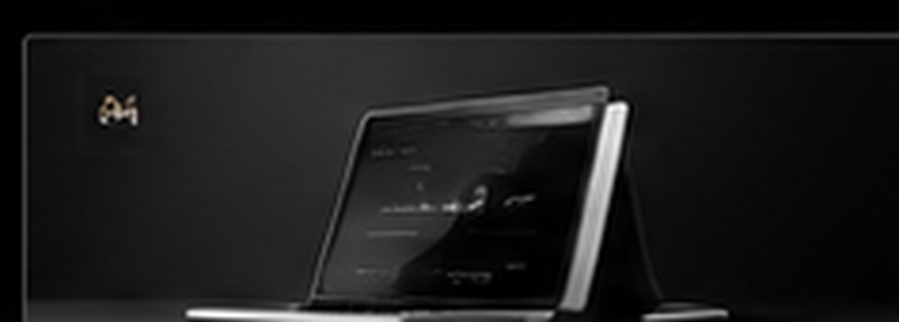
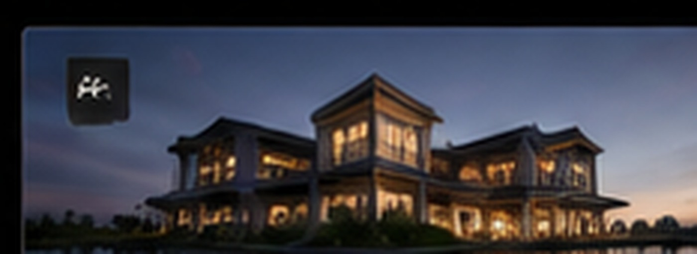
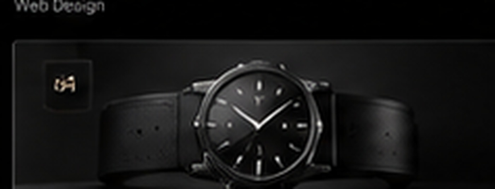

03 / SELECTED CONCEPTS
Ideas, shaped
into experiences.
A collection of visual directions created to demonstrate how thoughtful design can bring different brands and industries to life.

EXPLORE CONCEPT ↗
EXPLORE CONCEPT ↗
EXPLORE CONCEPT ↗EXPLORE CONCEPT ↗
These are illustrative portfolio concepts, not claims of completed client engagements. Replace them with approved T/A Company projects before publishing.